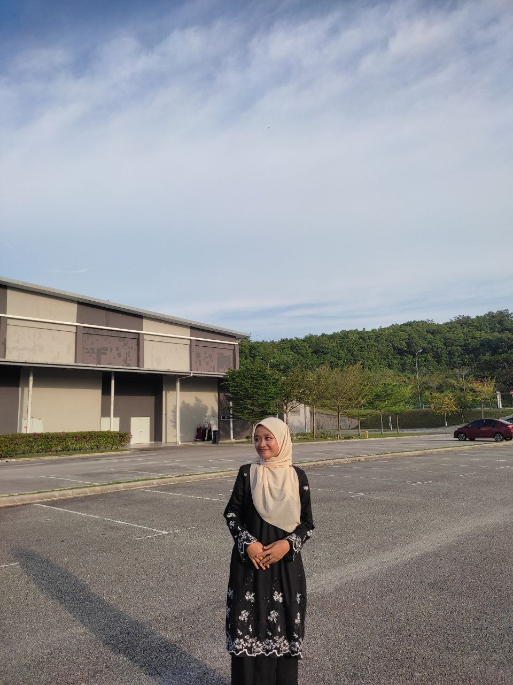

MY VISION
Student & Developer
Currently, I want to focus on my university journey where I want to succesfully earn a diploma in Information Management and become an information scientist, working on providing focused information to scientific and technical research staff in industry, that make a positive impact on society. Moreover, I want to continue my study until master level for a higher position in the working field.
In order to become a well-rounded individual who excels academically, practices good self-care, and contributes positively to my community, continuously evolving as a lifelong learner. I believe that I will become a socially responsible person, contributing to sustainable development and positive change.
I have great communication skills and the ability to persuade others. I will become a lecturer as it utilizes my skills and because I want to raise the voice of students. I have a piece of great knowledge of finance management too where I will open a consultancy business that will help small businesses efficiently utilize the available resources and become successful for part-time and full-time students. I plan to use my creative thinking and software development skills to develop an application that will benefit people in managing their day to day tasks.